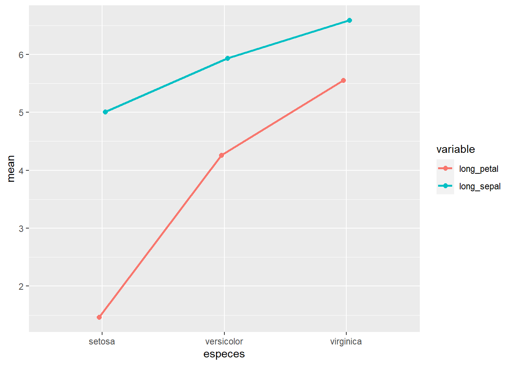

Chapitre 2 ANOVA à mesures répétées avec R
2.1 Librairies
2.2 Données
##
## -- Column specification --------------------------------------------------------
## cols(
## regime = col_character(),
## reference = col_double(),
## mg1 = col_double(),
## mg2 = col_double(),
## mg3 = col_double(),
## mg4 = col_double()
## )Rassembler les colonnes mg1 à mg4 en format long et convertir l’identifiant et le temps en facteurs
mgl <- mg %>%
mutate(id = 1:nrow(mg)) %>%
gather(key = "seance", value = "tmg", -c(regime, reference, id)) %>%
convert_as_factor(id, seance)
head(mgl)## # A tibble: 6 x 5
## regime reference id seance tmg
## <fct> <dbl> <fct> <fct> <dbl>
## 1 Ba 0,25 1 1 mg1 56.4
## 2 Ba 0,25 2 2 mg1 52.4
## 3 Ba 0,25 3 3 mg1 68.4
## 4 Ba 0,5 1 4 mg1 70.2
## 5 Ba 0,5 2 5 mg1 70.2
## 6 Ba 0,5 3 6 mg1 57.22.3 Sommaire des données
## # A tibble: 4 x 5
## seance variable n mean sd
## <fct> <chr> <dbl> <dbl> <dbl>
## 1 mg1 tmg 27 64.8 8.33
## 2 mg2 tmg 30 23.0 5.60
## 3 mg3 tmg 30 27.5 7.94
## 4 mg4 tmg 30 33.3 9.192.4 Visualisation boxplots
## Warning: Removed 3 rows containing non-finite values (stat_boxplot).
2.5 Détection valeurs aberrantes
## # A tibble: 2 x 7
## seance regime reference id tmg is.outlier is.extreme
## <fct> <fct> <dbl> <fct> <dbl> <lgl> <lgl>
## 1 mg4 Ba 5 2 17 11.7 TRUE FALSE
## 2 mg4 WC 2 29 61 TRUE FALSE2.6 Normalité
Si les données sont normalement distribuées, la p-value de Shapiro-Wilk doit être supérieure à 0,05.
## # A tibble: 4 x 4
## seance variable statistic p
## <fct> <chr> <dbl> <dbl>
## 1 mg1 tmg 0.978 0.816
## 2 mg2 tmg 0.974 0.643
## 3 mg3 tmg 0.936 0.0695
## 4 mg4 tmg 0.939 0.0873Toutes les distributions sont normales.
NB. Si la taille de l’échantillon est supérieure à 50, le graphique de normalité QQ-plot est préféré parce qu’avec des échantillons de plus grande taille, le test de Shapiro-Wilk devient très sensible même à un écart mineur par rapport à la distribution normale.
Le graphique QQ-plot dessine la corrélation entre une donnée définie et la distribution normale. Ce n’est pas le cas ici mais je le fais quand même.
Créer des QQ-plots pour chaque point par séance
## Warning: Removed 3 rows containing non-finite values (stat_qq).## Warning: Removed 3 rows containing non-finite values (stat_qq_line).
## Warning: Removed 3 rows containing non-finite values (stat_qq_line).Tous les points se situent approximativement le long de la ligne de référence, nous pouvons supposer une normalité.
2.7 Sphéricité
## # A tibble: 4 x 5
## seance df1 df2 statistic p
## <fct> <int> <int> <dbl> <dbl>
## 1 mg1 9 17 0.735 0.673
## 2 mg2 9 20 0.124 0.999
## 3 mg3 9 20 0.773 0.642
## 4 mg4 9 20 0.782 0.635Les variances sont homogènes
2.8 Sphéricité et ANOVA, mesures repétées
La fonction anova_test() réalise également le test de sphéricité de Mauchly.
res_anova <- anova_test(data = mgl, #
dv = tmg, # dependant variable, num
wid = id, # identificateur de cas/échantillon (facteur)
within = seance) # facteur de groupement intra-sujets## Warning: NA detected in rows: 9,23,24.
## Removing this rows before the analysis.## ANOVA Table (type III tests)
##
## Effect DFn DFd F p p<.05 ges
## 1 seance 2.23 58 150.342 1.19e-24 * 0.821“ges” est la taille de l’effet généralisé (taille de la variabilité due au facteur intra-sujets)
Différence entre au moins 2 séances
2.9 Test post-hoc, mesures repétées
tph <- mgl %>%
pairwise_t_test(tmg ~ seance,
paired = TRUE,
p.adjust.method = "bonferroni")
tph %>%
select(group1, group2, p, p.adj, p.adj.signif)## # A tibble: 6 x 5
## group1 group2 p p.adj p.adj.signif
## <chr> <chr> <dbl> <dbl> <chr>
## 1 mg1 mg2 8.4 e-19 5.04e-18 ****
## 2 mg1 mg3 1.98e-15 1.19e-14 ****
## 3 mg1 mg4 4.65e-11 2.79e-10 ****
## 4 mg2 mg3 2.4 e- 2 1.47e- 1 ns
## 5 mg2 mg4 6.91e- 6 4.15e- 5 ****
## 6 mg3 mg4 1.1 e- 2 6.8 e- 2 ns## # A tibble: 4 x 5
## seance variable n mean sd
## <fct> <chr> <dbl> <dbl> <dbl>
## 1 mg1 tmg 27 64.8 8.33
## 2 mg2 tmg 30 23.0 5.60
## 3 mg3 tmg 30 27.5 7.94
## 4 mg4 tmg 30 33.3 9.19séeance 1 ≠ séance 2
séance 1 ≠ séance 3
séance 1 ≠ séance 4
séance 2 ≠ séance 4
séance 2 ≈ séance 3
séance 3 ≈ séance 4.